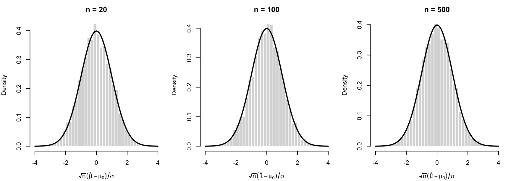
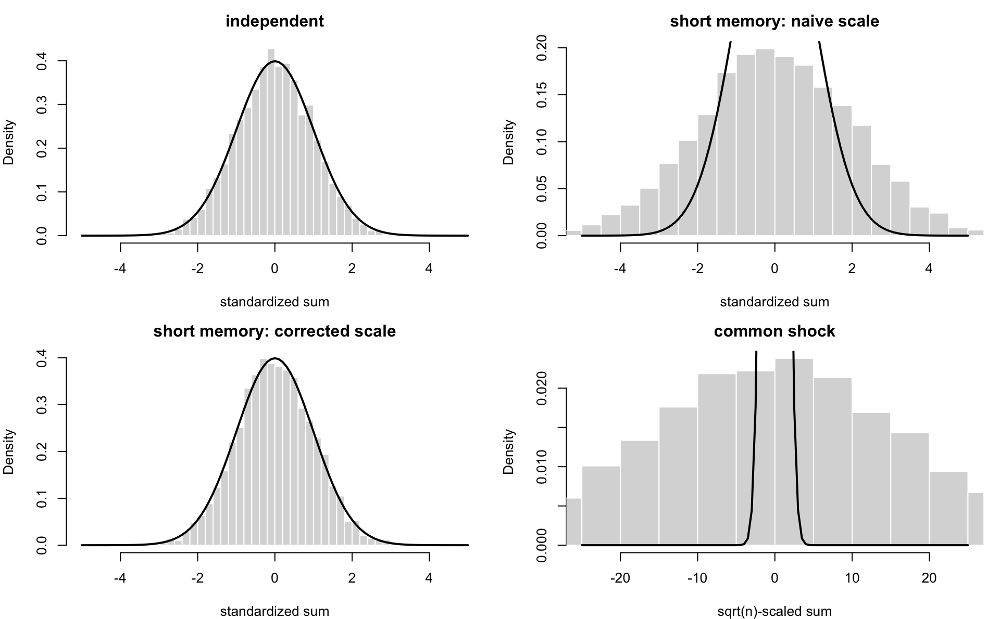
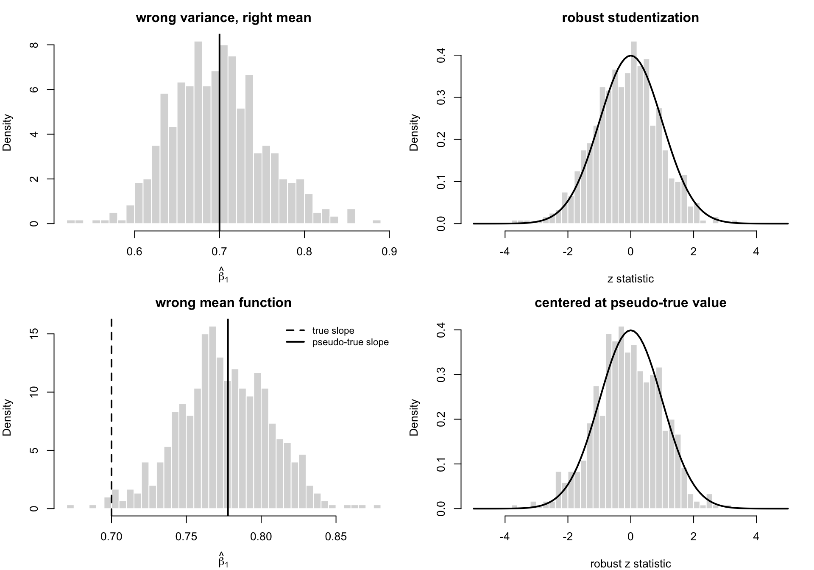

M推定
計量経済学大学院講義ノート
ノートこの章の到達目標
この章の目的は次の 4 点である。
- 1 次元の最尤推定を例に、M 推定量の漸近正規性がどこから出てくるかを手で確認する。
- 滑らかな M 推定量について、 \[ \sqrt{n}(\hat\theta-\theta_0)\overset{d}{\to} N(0,H^{-1}\Sigma H^{-1}) \] という基本形を導く。
- 標準誤差をどう推定するか、特に plug-in 推定量 と sandwich 推定量 の意味を理解する。
- 最尤法を M 推定の代表例として捉え、正しく特定された場合の情報行列等式と、誤指定下でのロバスト推論を整理する。
重要記法の確認
この章では、M 推定量の目的関数を \[ Q_n(\theta)=\frac1n\sum_{i=1}^n m(X_i;\theta) \] と書く。\(m\) は 1 観測あたりの目的関数であり、最尤法なら \(m(X_i;\theta)=\log f(X_i;\theta)\) である。
\(m\) が \(\theta\in\mathbb R^p\) について十分滑らかであるとき、 \[ s(X_i;\theta) = \frac{\partial m(X_i;\theta)}{\partial\theta} \in\mathbb R^p \] を score、すなわち勾配ベクトルと呼ぶ。また、 \[ D(X_i;\theta) = \frac{\partial^2 m(X_i;\theta)}{\partial\theta\partial\theta'} \in\mathbb R^{p\times p} \] を Hessian、すなわち ヘッセ行列 と呼ぶ。成分で書けば \[ D_{jk}(X_i;\theta) = \frac{\partial^2 m(X_i;\theta)}{\partial\theta_j\partial\theta_k} \] である。
真の値 \(\theta_0\) のまわりで \[ Z_n=\frac1{\sqrt n}\sum_{i=1}^n s(X_i;\theta_0), \qquad H=-E[D(X_i;\theta_0)] \] とおく。
- \(s(X_i;\theta)\)：目的関数の傾き
- \(D(X_i;\theta)\)：目的関数の 2 階微分、ヘッセ行列
- \(H\)：母目的関数の局所的な曲率
- \(\Sigma\)：\(Z_n\) の漸近分散
である。
1 導入
前章では、極値推定量の一致性は
- 母目的関数が \(\theta_0\) で clean maximum をもつこと
- 標本目的関数が一様収束すること
で保証されることを見た。この章ではその次の段階として、推論 のために必要な漸近正規性を扱う。
M 推定量では、目的関数が標本平均の形をしているため、微分可能性を仮定すると一階条件を線形化できる。すると、推定誤差は
- score の標本平均の揺らぎ
- 母目的関数の曲率
の 2 つの要素で近似される。これが \[ \sqrt n(\hat\theta-\theta_0)\approx H^{-1}Z_n \] という基本表現につながる。
ヒント直観
M 推定の漸近理論は、ほぼ次の一行に尽きる。
一階条件を \(\theta_0\) のまわりでテイラー展開すると、推定量のずれは「score の平均的なノイズ」を「曲率」で割ったものになる。
したがって、
- \(H\) が大きい（目的関数が急峻）ほど推定量は精密になり、
- \(\Sigma\) が大きい（score の揺らぎが大きい）ほど推定量は不精密になる。
1.1 1 次元の例：正規平均の MLE
まずは 1 次元で、式が全部見える例から始める。\(X_1,\ldots,X_n\) が独立同分布で \[ X_i\sim N(\mu_0,\sigma^2) \] に従うとする。ここでは \(\sigma^2\) は既知とし、\(\mu_0\) だけを推定する。
1 観測あたりの対数尤度は、\(\mu\) に依存しない定数を除けば \[ m(X_i;\mu) = -\frac{1}{2\sigma^2}(X_i-\mu)^2 \] である。したがって標本目的関数は \[ Q_n(\mu) = \frac1n\sum_{i=1}^n m(X_i;\mu) = -\frac{1}{2\sigma^2}\frac1n\sum_{i=1}^n (X_i-\mu)^2 \] であり、これを最大化する \(\hat\mu\) が MLE である。
一階微分は \[ \frac{\partial Q_n(\mu)}{\partial \mu} = \frac1n\sum_{i=1}^n \frac{X_i-\mu}{\sigma^2} = \frac{\bar X_n-\mu}{\sigma^2}. \] 一階条件 \(\partial Q_n(\hat\mu)/\partial\mu=0\) より \[ \hat\mu=\bar X_n \] である。
これだけなら標本平均の話に見えるが、M 推定の一般形もすでに現れている。score は \[ s(X_i;\mu_0) = \frac{\partial m(X_i;\mu)}{\partial\mu}\bigg|_{\mu=\mu_0} = \frac{X_i-\mu_0}{\sigma^2} \] であり、2 階微分は \[ D(X_i;\mu) = \frac{\partial^2 m(X_i;\mu)}{\partial\mu^2} = -\frac1{\sigma^2}. \] したがって \[ H=-E[D(X_i;\mu_0)]=\frac1{\sigma^2}, \qquad \Sigma=E[s(X_i;\mu_0)^2] = E\left[\frac{(X_i-\mu_0)^2}{\sigma^4}\right] = \frac1{\sigma^2}. \]
次に、一般理論の形で漸近正規性を導いてみる。一階条件を \(\mu_0\) のまわりで展開する。今回は 2 階微分が定数なので、展開は近似ではなく厳密である。 \[ \begin{aligned} 0 &= \frac{\partial Q_n(\hat\mu)}{\partial\mu} \\ &= \frac{\partial Q_n(\mu_0)}{\partial\mu} + \frac{\partial^2 Q_n(\mu_0)}{\partial\mu^2}(\hat\mu-\mu_0) \\ &= \frac1n\sum_{i=1}^n \frac{X_i-\mu_0}{\sigma^2} - \frac1{\sigma^2}(\hat\mu-\mu_0). \end{aligned} \] 両辺に \(\sqrt n\) を掛けて整理すると \[ \sqrt n(\hat\mu-\mu_0) = \frac1{\sqrt n}\sum_{i=1}^n (X_i-\mu_0). \] 前章の CLT より \[ \frac1{\sqrt n}\sum_{i=1}^n (X_i-\mu_0) \overset{d}{\to} N(0,\sigma^2). \] したがって \[ \sqrt n(\hat\mu-\mu_0) \overset{d}{\to} N(0,\sigma^2). \]
同じ結論を \(H^{-1}\Sigma H^{-1}\) の形で書けば \[ H^{-1}\Sigma H^{-1} = \sigma^2\cdot \frac1{\sigma^2}\cdot \sigma^2 = \sigma^2. \] つまり、正規平均の MLE はこの章の一般公式の最も単純な例である。
この図では \[ \frac{\sqrt n(\hat\mu-\mu_0)}{\sigma} \] を描いている。\(n=20\) でもかなり正規分布に近いが、\(n\) が大きくなるほど標準正規の曲線と重なっていく。ここで起きていることは、これから一般の M 推定量で行う議論の縮図である。
2 漸近正規性の詳細
2.1 基本定理
まず、滑らかな M 推定量の漸近正規性を与える基本結果を述べる。数値最適化誤差を許すため、厳密な一階条件ではなく、近似的一階条件を仮定する。
この定理で使う記号をもう一度まとめておく。\(\theta\in\mathbb R^p\) に対して \[ s(X_i;\theta)=\frac{\partial m(X_i;\theta)}{\partial\theta}, \qquad D(X_i;\theta)=\frac{\partial^2 m(X_i;\theta)}{\partial\theta\partial\theta'} \] であり、\(D(X_i;\theta)\) はヘッセ行列である。また、 \[ Z_n=\frac1{\sqrt n}\sum_{i=1}^n s(X_i;\theta_0), \qquad H=-E[D(X_i;\theta_0)]. \] \(\Sigma\) は \(Z_n\) の極限分散である。
定理 1 (M 推定量の漸近正規性) \(\hat\theta\) が \[ \frac{\partial Q_n(\hat\theta)}{\partial\theta}=o_p(n^{-1/2}) \tag{1}\] を満たすとする。さらに次を仮定する。
- \(X_1,\ldots,X_n\) は独立同分布である。
- \(\hat\theta\overset{p}{\to}\theta_0\).
- \(\theta_0\) は \(\Theta\) の内部点である。
- 任意の \(X_i\) に対して \(m(X_i;\theta)\) は \(\theta\) について 2 回連続微分可能である。
- \[ Z_n=\frac1{\sqrt n}\sum_{i=1}^n s(X_i;\theta_0)\overset{d}{\to} N(0,\Sigma), \] ただし \(\Sigma\) は正定値である。
- \(\theta_0\) のある凸・コンパクト近傍 \(N\) が存在して \[ E[\sup_{\theta\in N}\|D(X_i;\theta)\| ]<\infty. \]
- \[ H=-E[D(X_i;\theta_0)] \] は正定値である。
このとき \[ \sqrt n(\hat\theta-\theta_0)\overset{d}{\to} N(0,H^{-1}\Sigma H^{-1}). \]
証明. 証明の流れは次の通りである。
- 近似的一階条件を書く。
- その一階条件を \(\theta_0\) のまわりでテイラー展開する。
- ヘッセ行列の標本平均を母集団の曲率 \(-H\) に置き換える。
- 最後に CLT と Slutsky の定理を使う。
まず \[ S_n(\theta) = \frac{\partial Q_n(\theta)}{\partial\theta} = \frac1n\sum_{i=1}^n s(X_i;\theta) \] と書く。近似的一階条件は \[ S_n(\hat\theta)=o_p(n^{-1/2}) \] である。両辺に \(\sqrt n\) を掛けると \[ \sqrt n S_n(\hat\theta)=o_p(1). \]
次に、\(S_n(\hat\theta)\) を \(\theta_0\) のまわりで展開する。ベクトル値関数なので、平均値展開を積分形で書くと \[ S_n(\hat\theta) = S_n(\theta_0) + \left[ \int_0^1 \frac{\partial S_n(\theta_0+\lambda(\hat\theta-\theta_0))}{\partial\theta'} d\lambda \right](\hat\theta-\theta_0). \] ここで \[ \frac{\partial S_n(\theta)}{\partial\theta'} = \frac{\partial^2 Q_n(\theta)}{\partial\theta\partial\theta'} = \frac1n\sum_{i=1}^n D(X_i;\theta) \] である。したがって \[ A_n = \int_0^1 \left[ \frac1n\sum_{i=1}^n D(X_i;\theta_0+\lambda(\hat\theta-\theta_0)) \right] d\lambda \] とおけば、 \[ S_n(\hat\theta) = S_n(\theta_0)+A_n(\hat\theta-\theta_0). \]
この式に \(\sqrt n\) を掛ける。 \[ \sqrt n S_n(\hat\theta) = \sqrt n S_n(\theta_0) + A_n\sqrt n(\hat\theta-\theta_0). \] 左辺は \(o_p(1)\) である。また \[ \sqrt n S_n(\theta_0) = \sqrt n\left(\frac1n\sum_{i=1}^n s(X_i;\theta_0)\right) = \frac1{\sqrt n}\sum_{i=1}^n s(X_i;\theta_0) = Z_n. \] よって \[ o_p(1) = Z_n+A_n\sqrt n(\hat\theta-\theta_0). \] これを移項すると \[ (-A_n)\sqrt n(\hat\theta-\theta_0) = Z_n+o_p(1). \]
次に \(A_n\) の極限を確認する。仮定 2 より \(\hat\theta\overset{p}{\to}\theta_0\) である。したがって任意の \(\lambda\in[0,1]\) について \[ \theta_0+\lambda(\hat\theta-\theta_0)\overset{p}{\to}\theta_0. \] さらに仮定 4 と 6 により、ヘッセ行列の各成分について \[ \sup_{\theta\in N} \left\| \frac1n\sum_{i=1}^n D(X_i;\theta) - E[D(X_i;\theta)] \right\| \overset{p}{\to}0 \] が成り立つ。これは前章で見た一様大数法則の使い方である。
また、優収束定理により \(E[D(X_i;\theta)]\) は \(\theta_0\) の近くで連続である。したがって \[ \frac1n\sum_{i=1}^n D(X_i;\theta_0+\lambda(\hat\theta-\theta_0)) \overset{p}{\to} E[D(X_i;\theta_0)] \] が \(\lambda\in[0,1]\) について一様に成り立つ。積分しても極限は変わらないので \[ A_n\overset{p}{\to}E[D(X_i;\theta_0)]=-H. \] つまり \[ -A_n\overset{p}{\to}H. \]
仮定 7 より \(H\) は正定値なので可逆である。行列の逆写像は可逆行列の近くで連続だから、確率が 1 に近い事象上で \(-A_n\) は可逆であり、 \[ (-A_n)^{-1}\overset{p}{\to}H^{-1}. \] 先ほどの式 \[ (-A_n)\sqrt n(\hat\theta-\theta_0) = Z_n+o_p(1) \] の両辺に \((-A_n)^{-1}\) を掛けると \[ \sqrt n(\hat\theta-\theta_0) = (-A_n)^{-1}Z_n+(-A_n)^{-1}o_p(1). \] ここで \((-A_n)^{-1}=O_p(1)\) なので \[ (-A_n)^{-1}o_p(1)=o_p(1). \] よって \[ \sqrt n(\hat\theta-\theta_0) = (-A_n)^{-1}Z_n+o_p(1). \]
最後に Slutsky の定理を使う。仮定 5 より \[ Z_n\overset{d}{\to}N(0,\Sigma) \] であり、上で示した通り \[ (-A_n)^{-1}\overset{p}{\to}H^{-1}. \] したがって Slutsky の定理から \[ (-A_n)^{-1}Z_n \overset{d}{\to} H^{-1}Z, \qquad Z\sim N(0,\Sigma). \] 正規ベクトルを定数行列で左から掛けると、平均は \(0\) のままで、分散共分散行列は \[ \mathrm{Var}(H^{-1}Z) = H^{-1}\Sigma (H^{-1})' \] となる。\(H\) は対称なので \((H^{-1})'=H^{-1}\) である。したがって \[ \sqrt n(\hat\theta-\theta_0) \overset{d}{\to} N(0,H^{-1}\Sigma H^{-1}). \]
ノートなぜ一致性が先に必要なのか
上の定理では \(\hat\theta\overset{p}{\to}\theta_0\) を仮定している。これは、テイラー展開で現れる \(\theta_0+\lambda(\hat\theta-\theta_0)\) が \(\theta_0\) の近くにあることを保証し、ヘッセ行列の標本平均を \(-H\) に置き換えるために必要である。
つまり、
- 前章では どこに収束するか を示し、
- この章では どの速度・どの分布で揺らぐか を示している。
2.2 score の CLT と \(\Sigma\)
定理 1 の中で最もデータに依存するのは、 \[ Z_n=\frac1{\sqrt n}\sum_{i=1}^n s(X_i;\theta_0) \] の極限定理である。したがって \(\Sigma\) の形は、score の和にどの CLT を使えるかで決まる。
2.2.1 独立同分布データ
\(X_1,\ldots,X_n\) が独立同分布で、 \[ E[s(X_i;\theta_0)]=0, \qquad E\bigl[\|s(X_i;\theta_0)\|^2\bigr]<\infty \] とする。このとき前章の多変量 CLT をそのまま使える。
前章の多変量 CLT の仮定は次の 3 つだった。
- 足し合わせる確率ベクトルが独立同分布である。
- 平均が 0 である。
- 分散共分散行列が有限である。
今は \[ g_i=s(X_i;\theta_0) \] とおけばよい。仮定 1 より \(X_i\) は独立同分布なので、\(g_i\) も独立同分布である。最尤法のように \(\theta_0\) が母目的関数の内部最大点なら \[ E[s(X_i;\theta_0)] = \frac{\partial}{\partial\theta}E[m(X_i;\theta)]\bigg|_{\theta=\theta_0} =0 \] である。一般の M 推定でも、この条件は「母目的関数の一階条件」として仮定する。さらに \[ E\bigl[\|s(X_i;\theta_0)\|^2\bigr]<\infty \] を置いているので、分散共分散行列 \[ \Sigma = E[s(X_i;\theta_0)s(X_i;\theta_0)'] \] は有限である。
したがって前章の多変量 CLT より \[ Z_n = \frac1{\sqrt n}\sum_{i=1}^n s(X_i;\theta_0) \overset{d}{\to} N(0,\Sigma), \qquad \Sigma=E[s(X_i;\theta_0)s(X_i;\theta_0)']. \] これが 定理 1 の仮定 5 を確認するステップである。
ノートRemark：時系列データなら何を直す必要があるか
この章の主定理では、データを独立同分布として扱った。時系列データでは、この仮定のうち主に壊れるのは 独立性 である。直す必要がある場所と、直さなくてよい場所を分けておく。
直す必要があるのは次の 2 箇所である。
- score の CLT：\(n^{-1/2}\sum_i s(X_i;\theta_0)\) の極限分散が、単純な \(E[ss']\) ではなく、時間方向の共分散も含む量になる。
- ヘッセ行列の大数法則：\(n^{-1}\sum_i D(X_i;\theta)\) が期待値に近づくことを、独立データ用ではなく、時系列用の大数法則で確認する必要がある。
一方で、直さなくてよい部分もある。
- 一階条件をテイラー展開する代数はそのままである。
- \(H=-E[D(X_i;\theta_0)]\) という曲率の意味は変わらない。
- 適切な CLT と大数法則が用意できれば、最後の Slutsky の使い方も同じである。
直観的には、時系列で変わるのは「\(Z_n\) の分散をどう数えるか」であって、「一階条件を線形化して曲率で割る」という M 推定の骨格は変わらない。
次の図は 3 つのケースを比べている。
- 独立：標準化した和が標準正規に近づく。
- 短い記憶：素朴な分散で割ると広がりがずれるが、時間方向の共分散を含めた分散で割ると標準正規に近づく。
- 共通ショック：全観測に同じショックが入ると \(\sqrt n\) スケールでは分布が安定しない。

3 標準誤差の推定
3.1 plug-in 推定量
独立同分布データでは、 \[ H=-E[D(X_i;\theta_0)], \qquad \Sigma=E[s(X_i;\theta_0)s(X_i;\theta_0)'] \] であった。未知なのは
- 真のパラメータ \(\theta_0\)
- 母集団分布に関する期待値
の 2 つである。最も自然な方法は、\(\theta_0\) を \(\hat\theta\) に置き換え、期待値を標本平均で置き換えることである。つまり \[ \hat H=-\frac1n\sum_{i=1}^n D(X_i;\hat\theta), \qquad \hat\Sigma=\frac1n\sum_{i=1}^n s(X_i;\hat\theta)s(X_i;\hat\theta)' \tag{2}\] と定義する。
このとき、漸近分散の推定量として \[ \hat\Omega=\hat H^{-1}\hat\Sigma\hat H^{-1} \tag{3}\] を用いる。これが sandwich 推定量 である。
注意として、\(\hat\Omega\) は \(\sqrt n(\hat\theta-\theta_0)\) の分散を推定している。したがって \(\hat\theta\) 自体の標準誤差として報告するのは \[ \sqrt{\mathrm{diag}(\hat\Omega/n)} \] である。
3.2 一貫性
補題 1 (標準誤差推定量の一貫性) 定理 1 の仮定に加えて、さらに \[ E[\sup_{\theta\in N}\|s(X_i;\theta)\|^2 ]<\infty \] を仮定する。このとき \[ \hat H\overset{p}{\to} H, \qquad \hat\Sigma\overset{p}{\to} \Sigma, \qquad \hat H^{-1}\hat\Sigma\hat H^{-1}\overset{p}{\to} H^{-1}\Sigma H^{-1} \] が成り立つ。
証明. \(\hat H\overset{p}{\to} H\) の証明は、漸近正規性の証明で行ったヘッセ行列の一様収束をそのまま使えばよい。つまり、\(\hat\theta\) が確率 1 に近い形で近傍 \(N\) に入ることを使い、 \[ -\frac1n\sum_{i=1}^n D(X_i;\hat\theta)-H \] を
- 標本平均と期待値の差
- 期待値の連続性による差
に分解して抑える。
\(\hat\Sigma\overset{p}{\to}\Sigma\) も同様で、関数族 \[ \{s(X_i;\theta)s(X_i;\theta)':\theta\in N\} \] に一様大数法則を適用する。最後は行列の逆写像の連続性と Slutsky の定理で \[ \hat H^{-1}\hat\Sigma\hat H^{-1}\overset{p}{\to} H^{-1}\Sigma H^{-1} \] が従う。
重要どの分散推定量を使うべきか
正しく特定された最尤法では \(H=\Sigma\) となるため、
- \(\hat H^{-1}\)
- \(\hat\Sigma^{-1}\)
- \(\hat H^{-1}\hat\Sigma\hat H^{-1}\)
のどれも極限では同じになる。しかし有限標本では一致しないことが多い。さらに誤指定の可能性を考えると、一般には 常に sandwich 形を使う のが安全である。
4 最尤法をもう少し詳しく
最尤法は M 推定の最も重要な例である。この節では、
- 最尤法が M 推定にどう埋め込まれるか
- 正しく特定された場合に何が特別か
- 誤指定のもとでは何が変わるか
を整理する。
4.1 条件付き最尤法
ノート例：条件付き最尤法
独立同分布データ \(X_i=(Y_i,Z_i)\) を考える。モデルが \[ f(X_i;\theta)=f(Y_i\mid Z_i;\theta)f(Z_i) \] と分解でき、\(f(Z_i)\) は \(\theta\) に依存しないとする。このとき平均対数尤度は \[ \frac1n\sum_{i=1}^n \log f(X_i;\theta) =\frac1n\sum_{i=1}^n \log f(Y_i\mid Z_i;\theta) +\frac1n\sum_{i=1}^n \log f(Z_i) \] だから、第 2 項は最適化に無関係である。したがって \[ Q_n(\theta)=\frac1n\sum_{i=1}^n \log f(Y_i\mid Z_i;\theta) \tag{4}\] を最大化すればよい。
母目的関数は \[ Q(\theta)=E[\log f(Y_i\mid Z_i;\theta)] \] である。
この例では \[ m(X_i;\theta)=\log f(Y_i\mid Z_i;\theta) \] だから、最尤法はそのまま M 推定量である。
4.2 漸近分布
定理 2 (最尤推定量の漸近正規性) \(Q_n(\theta)\) を 式 4 で定義する。\(\hat\theta\) が極値推定量であり、さらに近似的一階条件 式 1 を満たすとする。次を仮定する。
- \(X_1,\ldots,X_n\) は独立同分布である。
- \(\Theta\) はコンパクトである。
- \(\log f(Y_i\mid Z_i;\theta)\) は \(\theta\) について 2 回連続微分可能である。
- \[ E[\sup_{\theta\in\Theta}|\log f(Y_i\mid Z_i;\theta)| ]<\infty. \]
- \(Q(\theta)\) は \(\theta_0\) で一意に最大化される。
- \(\theta_0\) は \(\Theta\) の内部点である。
- \[ E[\|s(X_i;\theta_0)\|^2]<\infty. \]
- \(\theta_0\) のある近傍 \(N\) について \[ E[\sup_{\theta\in N}\|D(X_i;\theta)\| ]<\infty. \]
- \[ H=-E[D(X_i;\theta_0)] \] は正定値である。
このとき \[ \sqrt n(\hat\theta-\theta_0) \overset{d}{\to} N\left(0, E[D(X_i;\theta_0)]^{-1} E[s(X_i;\theta_0)s(X_i;\theta_0)'] E[D(X_i;\theta_0)]^{-1} \right). \]
証明. 一致性は前章の M 推定量の一般理論から従う。さらに独立同分布性と score の 2 乗可積分性により \[ Z_n=\frac1{\sqrt n}\sum_{i=1}^n s(X_i;\theta_0) \overset{d}{\to} N(0,E[s(X_i;\theta_0)s(X_i;\theta_0)']) \] である。したがって 定理 1 をそのまま適用すればよい。
4.3 正しく特定された場合
最尤法が特別なのは、モデルが正しく特定されているときに 情報行列等式（information matrix equality）が成り立つことである。
4.3.1 情報行列等式
ここでは条件付き密度 \(f(y\mid z;\theta)\) について説明する。\(z\) を固定すると、\(f(y\mid z;\theta)\) は \(y\) の密度なので \[ \int f(y\mid z;\theta)dy=1 \] である。この恒等式は、どの \(\theta\) でも成り立つ。
まず 1 回微分する。積分と微分を交換できる正則条件を仮定すると、 \[ \frac{\partial}{\partial\theta} \int f(y\mid z;\theta)dy = \int \frac{\partial f(y\mid z;\theta)}{\partial\theta}dy =0. \] ここで \[ \frac{\partial f(y\mid z;\theta)}{\partial\theta} = f(y\mid z;\theta) \frac{\partial \log f(y\mid z;\theta)}{\partial\theta} \] なので、 \[ \int f(y\mid z;\theta) \frac{\partial \log f(y\mid z;\theta)}{\partial\theta} dy =0. \] つまり \[ E_\theta\left[ \frac{\partial \log f(Y\mid z;\theta)}{\partial\theta} \middle| Z=z \right] =0. \] これが「score の期待値は 0」という事実である。
次に、この score の期待値 0 という式をさらに \(\theta\) で微分する。つまり \[ \frac{\partial}{\partial\theta'} \int f(y\mid z;\theta) \frac{\partial \log f(y\mid z;\theta)}{\partial\theta} dy =0 \] を計算する。積の微分により \[ \begin{aligned} 0 &= \int \frac{\partial}{\partial\theta'} \left\{ f(y\mid z;\theta) \frac{\partial \log f(y\mid z;\theta)}{\partial\theta} \right\} dy \\ &= \int \left[ \frac{\partial \log f(y\mid z;\theta)}{\partial\theta} \frac{\partial \log f(y\mid z;\theta)}{\partial\theta'} + \frac{\partial^2 \log f(y\mid z;\theta)}{\partial\theta\partial\theta'} \right] f(y\mid z;\theta) dy. \end{aligned} \] 最後の行で、また \[ \frac{\partial f(y\mid z;\theta)}{\partial\theta'} = f(y\mid z;\theta) \frac{\partial \log f(y\mid z;\theta)}{\partial\theta'} \] を使った。
したがって \[ E_\theta\left[ \frac{\partial^2 \log f(Y\mid Z;\theta)}{\partial\theta\partial\theta'} + \frac{\partial \log f(Y\mid Z;\theta)}{\partial\theta} \frac{\partial \log f(Y\mid Z;\theta)}{\partial\theta'} \middle| Z \right] =0. \] \(\theta=\theta_0\) でモデルが正しく特定されているなら、\(E_\theta[\cdot\mid Z]\) は真の条件付き期待値と一致する。よって反復期待値をとると \[ E[D(X_i;\theta_0)] + E[s(X_i;\theta_0)s(X_i;\theta_0)'] =0. \] 同値に \[ -E[D(X_i;\theta_0)] = E[s(X_i;\theta_0)s(X_i;\theta_0)'] \tag{5}\] である。
右辺と左辺の共通の値を 情報行列 と呼び、しばしば \[ I(\theta_0) \] と書く。したがって正しく特定された最尤法では \[ H=\Sigma=I(\theta_0) \] であり、漸近分散は \[ I(\theta_0)^{-1} \] に簡約される。
4.3.2 効率性
Cramér-Rao の下界は、十分正則な不偏推定量について \[ \mathrm{Var}(\hat\theta)\succeq \frac1n I(\theta_0)^{-1} \] を与える。最尤推定量は一般に有限標本で不偏とは限らないが、正しく特定された正則なパラメトリックモデルでは、漸近分散がちょうど \[ I(\theta_0)^{-1} \] となる。したがって最尤法は 漸近的に効率的 である。
ヒントなぜ ML は精密なのか
最尤法は、モデルが与える確率分布の情報を全面的に使う。そのため、同じ正則パラメトリックモデルの中では、通常は最も小さい漸近分散を達成する。
4.4 誤指定下の最尤法
モデルが誤指定されている場合、真の分布 \(g(x)\) はどの \(\theta\in\Theta\) に対しても \(f(x;\theta)\) と一致しない。それでも最尤法は意味を失うわけではなく、 \[ Q(\theta)=E[\log f(X_i;\theta)] \] を最大化する点を推定していると解釈できる。
真の密度を \(g(x)\) とすると、 \[ Q(\theta)-E[\log g(X_i)] =E\left[\log \frac{f(X_i;\theta)}{g(X_i)}\right] \] である。右辺は Kullback-Leibler divergence の符号反転に等しいから、\(\theta_0\) は
モデル族 \(\{f(\cdot;\theta):\theta\in\Theta\}\) の中で、真の分布 \(g\) に最も近い密度を選ぶパラメータ
として解釈される。この \(\theta_0\) を pseudo-true parameter と呼ぶ。
この見方は、White (1982) の誤指定 MLE の理論や、Gourieroux, Monfort and Trognon (1984) の pseudo maximum likelihood の理論で標準的に使われている。応用例として有名なのが、Santos Silva and Tenreyro (2006) の Poisson pseudo maximum likelihood である。そこでは、データが本当に Poisson 分布に従うことよりも、条件付き平均の形を正しく書けているかが重要になる。
4.4.1 何が変わるか
誤指定下では 式 5 は一般に成立しない。したがって \[ H\neq \Sigma \] であり、漸近分散はもはや \(I(\theta_0)^{-1}\) ではなく \[ H^{-1}\Sigma H^{-1} \] である。
このため、誤指定の可能性があるときは \[ \hat H^{-1}\hat\Sigma\hat H^{-1} \] という sandwich 推定量を使う必要がある。応用研究でいう robust standard errors は、まさにこの考え方に対応している。
重要実務上の推奨
最尤法であっても、
- 正しく特定されていると強く信じられる場合を除き、
- 基本的には sandwich 型の分散推定量を報告する
のが安全である。正しく特定されていれば sandwich でも正しいし、誤指定があっても破綻しにくいからである。
4.4.2 誤指定をシミュレーションで見る
ここでは Poisson 回帰を例に、2 種類の「モデルを間違える」を比べる。
- 分布は間違っているが、条件付き平均は正しい：真のデータは過分散をもつ負の二項分布だが、Poisson MLE を使う。この場合、Poisson の分散仮定は間違っているが、条件付き平均 \(E[Y_i\mid X_i]=\exp(\beta_0+\beta_1X_i)\) が正しければ \(\beta\) は一致推定される。
- 条件付き平均そのものが間違っている：真の平均は \(\exp(\beta_0+\beta_1X_i+\gamma X_i^2)\) だが、\(X_i^2\) を落として Poisson MLE を使う。この場合、推定量は真の \(\beta_1\) ではなく、KL の意味で最も近い pseudo-true parameter に収束する。
2 つ目の例では、\(X_i\sim N(0,1)\) とすると pseudo-true な傾きは明示的に計算できる。真の平均を \[ \mu_0(x)=\exp(\beta_0+\beta_1x+\gamma x^2) \] とし、間違ったモデルの平均を \[ \mu(x;\alpha,\delta)=\exp(\alpha+\delta x) \] とする。pseudo-true parameter は \[ E[(\mu_0(X)-\mu(X;\alpha,\delta))(1,X)']=0 \] を満たす。正規分布の積率母関数を使うと \[ \delta^*=\frac{\beta_1}{1-2\gamma} \] となる。つまり、欠落した \(X^2\) の効果が傾きにも入り込む。

上段左では、データは負の二項分布から来ているので Poisson 分布ではない。それでも条件付き平均が正しいため、Poisson MLE の傾きは真の \(\beta_1\) のまわりに集まる。上段右では、sandwich 型の標準誤差で標準化すると分布が標準正規に近づく。分散仮定を間違えているので、通常の Poisson 標準誤差ではなく、この robust な標準化が必要になる。
下段左では、推定値は破線の真の傾きではなく、実線の pseudo-true な傾きに集まる。つまり誤指定下の「一致性」とは、真の構造パラメータへの一致ではなく、母目的関数を最大化する値への一致である。下段右では、その pseudo-true な値で中心化し、robust 標準誤差で割ると、分布が標準正規に近くなる。
5 まとめ
この章の要点は次の通りである。
- 滑らかな M 推定量では、近似的一階条件を \(\theta_0\) のまわりで展開することで \[ \sqrt n(\hat\theta-\theta_0)\overset{d}{\to} N(0,H^{-1}\Sigma H^{-1}) \] が得られる。
- \(H\) は曲率、\(\Sigma\) は score の揺らぎを表す。
- 独立同分布データでは \(\Sigma=E[ss']\) であり、前章の多変量 CLT を直接使える。
- 標準誤差は \[ \hat\Omega=\hat H^{-1}\hat\Sigma\hat H^{-1} \] という sandwich 形で推定するのが基本である。
- 最尤法は M 推定の代表例であり、正しく特定されていれば情報行列等式により効率性が得られるが、誤指定下では robust な sandwich 推定が必要になる。
ノート次章への接続
次の GMM 章では、M 推定での \[ H=-E[D(X_i;\theta_0)], \qquad \Sigma=\text{score の漸近分散} \] に対応する量が \[ H=G'WG, \qquad \Sigma=G'WSWG \] として現れる。つまり、M 推定で見た「曲率とノイズの分解」は、GMM でもそのまま引き継がれる。